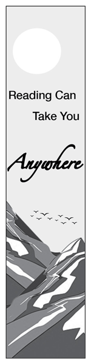

|
|
|||||||||
| Home Page || Printed Bookmark || Digital Photography || Speaker Infographic | |||||||||
|  |
For my bookmark, or print project, I had to come up with a design that would appeal to elementary school students and could only use black and white coloring. First, I created some sketches to figure out what design I wanted to use. I was stuck between one nature and one space inspired design. I decided on nature because I felt it was more unique. I then created a rough layout in InDesign, made a few changes, then printed a laser printed copy of the bookmark to make sure it looked how I wanted it to. Next, I had to manually print the bookmark using an off-set lithography press. Once they were dry, I was able to have them cut. After this process, they were successfully distributed to the students of Pequea Elementary School. | ||||||||
| Home || Printed Bookmark || Digital Photography || Speaker Infographic | |||||||||
| ©2023 Ashley G. Whicher | |||||||||